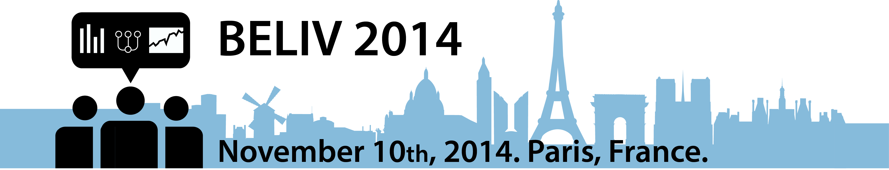
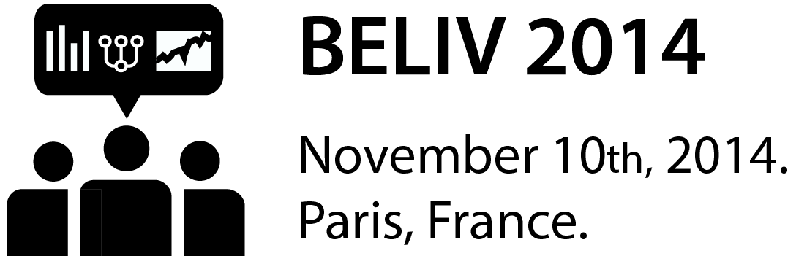

We invite you to contribute to Beliv 2014, the international workshop on evaluation in visualization.
Even though established scientific methods like controlled experiments and standard metrics like time and error continue to be the workhorse of evaluation in visualization, there is a growing need in the community to develop special approaches and metrics for evaluation at all stages of the development life cycle that address specific needs in visualization. The goal of the workshop is to continue the discussion and spread the word on alternative and novel evaluation methods and methodologies for visualization.
We accept 2 types of submissions—research and position papers. The workshop focuses on contributions from all areas of visualization, including Visual Analytics, Information Visualization, and Scientific Visualization:
Research papers aim to make progress toward novel evaluation methods in visualization and to discuss their benefits and limitations compared to traditional methodologies. As in past editions of Beliv, we will not accept papers that merely report on the evaluation of a system or technique unless the focus of the contribution is on lessons learned about applying a novel evaluation method or methodology and new insights on the evaluation itself are presented. Research papers present new work and unpublished results on the topic areas of the workshop. Research papers will be selected according to their novelty, quality and relevance.
Position papers are problem discussions or statements describing the author's relevant experience and ideas in regards to evaluation methods and methodologies for visualization. Position papers will be selected according to their importance and relevance for the workshop topics and how well they will fit the planned discussions.
Both types of papers can be up to eight pages long but the length of a submission needs to correspond to its contribution. For survey-style papers, an additional 9th page for references is allowed. Note that this extra page can only contain references.
All papers will be peer-reviewed by members of the program committee as well as the organizers.
To submit a paper create an account and submit the paper to the submission system at: https://cmt.research.microsoft.com/BELIV2014/. Please clarify whether you are submitting a position or research paper.
All the submissions should be formatted in the ACM style. Suitable templates, in LaTeX and Word, can be downloaded from: http://www.acm.org/sigs/pubs/proceed/template.html/. The submission, however, must be made in PDF format. Authors can decide whether they want to reveal their names on the submission (single-blind) or submit it anonymously (double-blind).
Topics of interest include, but are not limited to:
For past BELIV workshops and papers see these links:
BELIV 2006: published in the ACM DL
BELIV 2008: published in the ACM DL
BELIV 2010: published in the ACM DL
BELIV 2012: published in the ACM DL